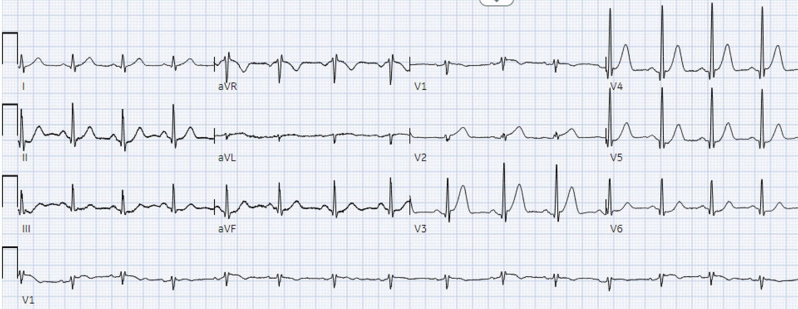
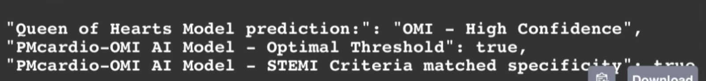
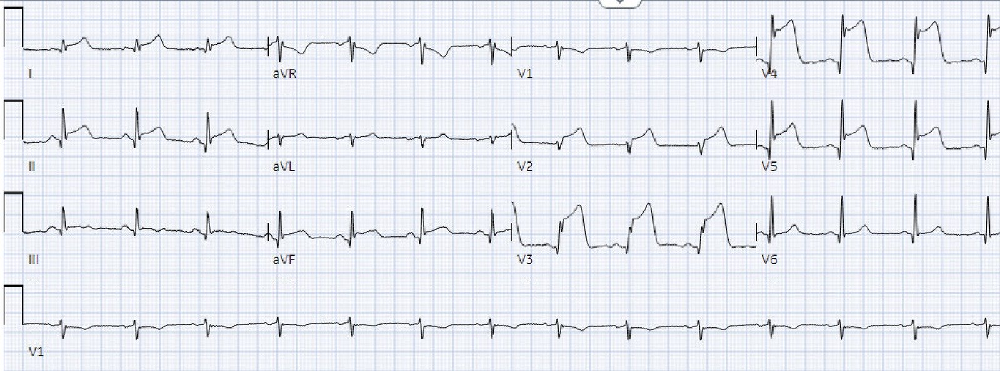
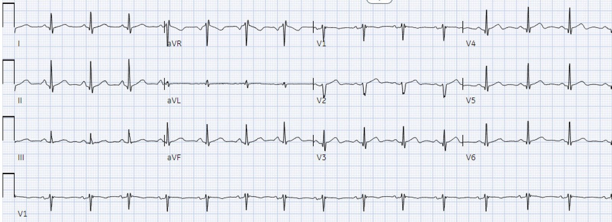
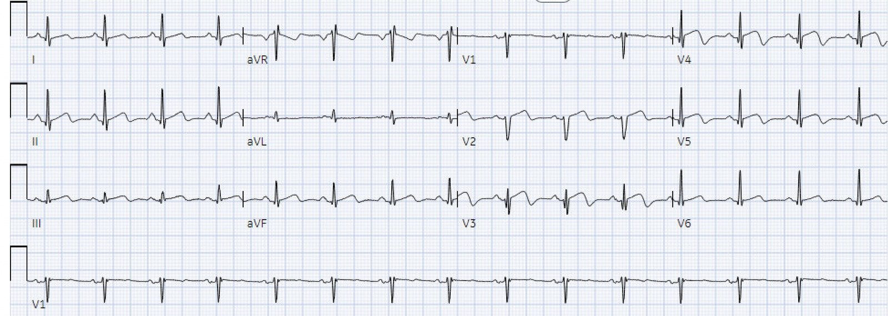
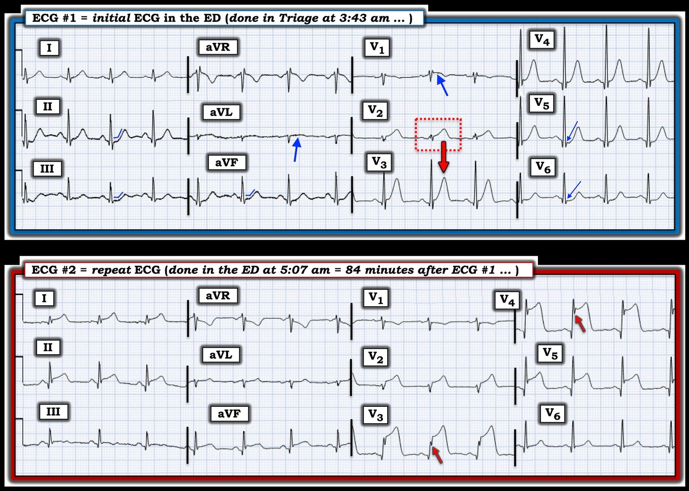
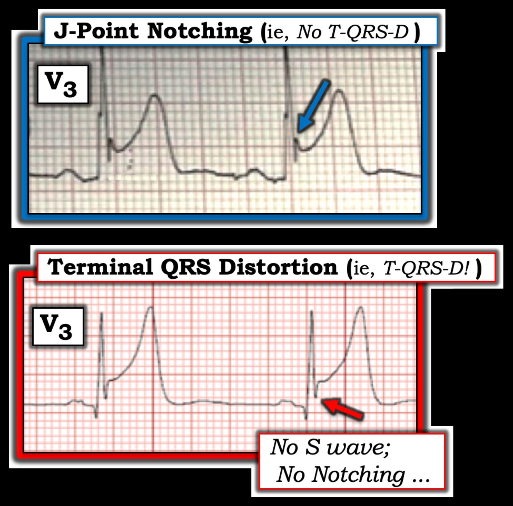

09/03/2023 — Một người đàn ông ngoài 50 tuổi bị đau ngực
Bản dịch tiếng Việt của bài "A man in his 50s with chest pain" – Dr. Smith’s ECG Blog. Giữ nguyên toàn bộ 8 hình ảnh của bản gốc.
Người gửi giấu tên, Pendell Meyers viết bài
Một người đàn ông ngoài 50 tuổi, không có tiền sử bệnh lý nào được biết trước đó, đến khoa cấp cứu (ED) vì đau ngực dữ dội từng cơn. Ông bị các cơn đau ngực lúc có lúc không suốt cả đêm, cho đến khoảng 1 giờ trước khi đến viện thì cơn đau trở nên liên tục, có tính chất đè ép, mức độ 10/10, lan ra cả hai cánh tay. Ông phủ nhận choáng váng, khó thở, nôn hay đau bụng. Các dấu hiệu sinh tồn trong giới hạn bình thường.
Đây là điện tâm đồ lúc phân loại (triage) của ông, ghi lúc 0343:


Diễn giải của Meyers: Chẩn đoán xác định OMI do LAD, với sóng T tối cấp trên một vùng chi phối rộng của LAD, gồm các chuyển đạo trước tim, các chuyển đạo bên cao và các chuyển đạo dưới. Hầu như không có ST chênh lên (STE), vì vậy không đạt tiêu chuẩn STEMI. Thế nhưng hoàn toàn đủ để chẩn đoán tắc cấp LAD.
Đây là kết quả trả về từ mô hình AI Queen of Hearts của PM Cardio:


Đọc bài xã luận gần đây của chúng tôi: Hyperacute T-waves Can Be a Useful Sign of Occlusion Myocardial Infarction if Appropriately Defined. Annals of Emergency Medicine (Sóng T tối cấp có thể là một dấu hiệu hữu ích của nhồi máu cơ tim do tắc nếu được định nghĩa thích hợp. Tạp chí Annals of Emergency Medicine)
Khoa tim mạch được gọi đến đánh giá bệnh nhân ngay để chụp mạch vành cấp cứu, nhưng họ cho rằng điện tâm đồ không đạt tiêu chuẩn STEMI và quyết định chờ thêm thông tin trước khi tiến hành thông tim.
Ông được tiêm 6 mg morphine tĩnh mạch vì đau đang tiếp diễn.
Troponin T ban đầu của ông trả về là 0.03 ng/L (với xét nghiệm này, bất thường là bất kỳ giá trị nào lớn hơn 0.01, đây cũng là giới hạn phát hiện, vì đây là một xét nghiệm troponin thế hệ cũ).
Siêu âm tim tại giường do bác sĩ nội trú chuyên khoa tim mạch (fellow) thực hiện lúc 0407:
“Giảm động đến vô động các vùng vách mỏm, bên mỏm, trước mỏm, dưới mỏm và trước vách giữa, dựa trên các mặt cắt rất hạn chế.”
Thật đáng kinh ngạc phải không?? Đau ngực kiểu đè ép đang diễn ra cần đến morphine, troponin dương tính, siêu âm tim cho thấy rối loạn vận động thành, và một điện tâm đồ có giá trị chẩn đoán, vậy mà bệnh nhân vẫn không được đưa đến phòng thông tim (cath lab) hay được dùng thuốc tiêu sợi huyết, tất cả dường như chỉ vì điện tâm đồ không đạt tiêu chuẩn STEMI. Thế nhưng, theo kinh nghiệm của tôi và kinh nghiệm của độc giả cũng như những người đóng góp cho blog, đây lại là cách hành xử bình thường ở nhiều nơi trên thế giới dưới mô hình STEMI.
Cuối cùng, điện tâm đồ thứ hai của ông được ghi lúc 0507 và may mắn là đã cho thấy tiêu chuẩn STEMI (nhưng thời điểm này đã muộn hơn 84 phút so với chẩn đoán OMI của chúng tôi!):


Chỉ đến khi bệnh nhân đạt tiêu chuẩn STEMI thì ông mới được phép đến phòng thông tim, vào khoảng 0530. Kết quả cho thấy thủ phạm là LAD đoạn giữa hẹp 95%, không ghi nhận dòng chảy TIMI trước can thiệp. PCI được thực hiện, với dòng chảy TIMI 3 sau can thiệp.
Lưu ý rằng ca STEMI rõ ràng này không hẹp 100% tại thời điểm thông tim. Một phần là vì tình trạng của động mạch lúc ghi điện tâm đồ thường khác với tình trạng của động mạch tại thời điểm chụp mạch vành. Một tỷ lệ đáng kể các ca STEMI rõ ràng có dòng chảy TIMI 3 khi được chụp mạch vành nhanh chóng. Xem đoạn trích ở cuối bài, được lấy từ
trang OMI Facts and References (Dữ kiện và tài liệu tham khảo về OMI) của chúng tôi.
Vài giờ sau thông tim:


24 giờ sau khi nhập viện:


Troponin (ng/L):
(Đây là troponin T, có giá trị thấp hơn nhiều so với troponin I)
0.03
0.46
1.06
1.28
1.66
1.94
2.16
2.25
2.62
2.19
Siêu âm tim chính thức (vài giờ sau thông tim):
Phân suất tống máu (EF) 49%
vách trước đoạn giữa giảm động mức độ vừa
mỏm trước loạn động
mỏm dưới loạn động
mỏm vách vô động
chóp mỏm (apical cap) loạn động
mỏm giãn và loạn động, phù hợp với phình
huyết khối mỏm thất trái mức độ vừa
Ông sống sót đến khi ra viện. Bạn có nghĩ rằng kết cục lâu dài của ông sẽ tốt bằng nếu OMI của ông được nhận ra đúng cách ngay khi đến viện, sớm hơn 1.5 giờ không?
Những điểm cần học:
Bệnh nhân OMI có thể được chẩn đoán nhanh hơn và chính xác hơn bằng cách đọc điện tâm đồ ở trình độ cao hơn so với việc chỉ dựa vào tiêu chuẩn STEMI.
Bệnh nhân NSTEMI có triệu chứng thiếu máu cục bộ kháng trị đang diễn ra dù đã điều trị nội khoa, ngay cả khi không có điện tâm đồ có giá trị chẩn đoán, đều được mọi hướng dẫn khuyến cáo chụp mạch vành cấp cứu.
Sóng T tối cấp hiện chưa có định nghĩa nghiên cứu chính thức, nhưng có lẽ được định nghĩa tốt nhất bằng tỷ lệ diện tích dưới đường cong tăng lên so với phức bộ QRS của chúng.
AI đọc điện tâm đồ có thể sớm giảm bớt gánh nặng cho con người trong việc phải bỏ ra nhiều thời gian và công sức để ghi nhớ các hình ảnh điện tâm đồ.
Dòng chảy TIMI tại thời điểm thông tim ở OMI STEMI dương tính (STEMI(+) OMI):
Các kết cục dùng để xác định sự hiện diện của OMI trên điện tâm đồ không thể chỉ dựa vào dòng chảy TIMI của tổn thương tại thời điểm chụp mạch vành, vì tình trạng của động mạch thường khác nhau giữa thời điểm ghi điện tâm đồ và thời điểm chụp mạch vành. STEMI đã được chứng minh có động mạch thông trong 19% đến 36% số ca, tùy theo đó là dòng chảy TIMI −1, −2 hay −3. Karwowski và cs. cho thấy chỉ 64% trong số 4581 ca STEMI có dòng chảy TIMI 0 trên chụp mạch vành. [25] Stone và cs. nhận thấy 72% có dòng chảy TIMI 0 hoặc 1. [26] Cuối cùng, Cox và cs. nhận thấy 80% có TIMI 0, 1 hoặc 2. [27] Như vậy, khoảng 20% các ca STEMI thực sự, rõ ràng có dòng chảy TIMI 3 khi chụp mạch vành ngay. [27]
25. Karwowski J, Gierlotka M, Gasior M, Polonski L, Ciszewski J, Beckowski M, Kowalik I, Szwed H. Relationship between an in-farct related artery, acute total coronary occlusion, and mortality in patients with ST-segment and non-ST-segment myocardial infarction. Tạp chí Pol Arch Intern Med. 2017;127:401–411.
26. Stone GW, Cox D, Garcia E, Brodie BR, Morice MC, Griffin J, Mattos L, Lansky AJ, O’Neill WW, Grines CL. Normal flow (TIMI-3) before mechanical reperfusion therapy is an independent determinant of survival in acute myocardial infarction: analysis from the primary angioplasty in myocardial infarction trials. Tạp chí Circulation. 2001;104:636–641. doi: 10.1161/ hc3101.093701
27. Cox DA, Stone GW, Grines CL, Stuckey T, Zimetbaum PJ, Tcheng JE, Turco M, Garcia E, Guagliumi G, Iwaoka RS, và cs. Comparative early and late outcomes after primary percutaneous coronary intervention in ST-segment elevation and non–ST-segment elevation acute myocardial infarction (from the CADILLAC Trial). Tạp chí Am J Cardiol. 2006;98:331–337. doi: 10.1016/j.amjcard.2006.01.102
Những điểm cần học:
Dòng chảy TIMI 3 tại thời điểm thông tim không có nghĩa là bệnh nhân không bị OMI hay STEMI.
Nhiều bệnh nhân bị OMI STEMI dương tính (STEMI(+) OMI) rõ ràng có dòng chảy TIMI 3 tại thời điểm chụp mạch vành.
Không thể chỉ dùng dòng chảy TIMI làm định nghĩa kết cục cho OMI hay STEMI.

==================================
BÌNH LUẬN CỦA TÔI, bởi KEN GRAUER, MD (9/3/2023):
==================================
Đây là một bài viết khó đọc đối với tôi … Chúng ta phải rút kinh nghiệm từ các sai sót do bỏ sót và do làm sai đã xảy ra. Trong số những Bài học cần rút ra có những điều sau:
- Hãy tôn trọng bối cảnh lâm sàng. — Người đàn ông khoảng 50 tuổi, trước đó khỏe mạnh, trong ca hôm nay đến viện với bệnh sử đau ngực ban đầu từng cơn — nhưng sau đó trở nên “liên tục” — “đè ép” và “mức độ 10/10” — khiến ông phải đến khoa cấp cứu vào lúc nửa đêm (tức là, điện tâm đồ đầu tiên của ông được ghi lúc 3:43 sáng). Kiểu biểu hiện lâm sàng này ngay lập tức xếp bệnh nhân vào nhóm có tỷ lệ hiện mắc rất cao đối với một biến cố tim cấp, thậm chí trước khi chúng ta xem điện tâm đồ và kết quả troponin của ông. Theo định nghĩa — đây là kiểu bệnh nhân mà chúng ta cần phải loại trừ một hội chứng tim cấp — thay vì đòi hỏi tiêu chuẩn STEMI dựa trên milimét rồi mới xem xét một biến cố cấp.
- Hãy quên “mô hình STEMI” đã lỗi thời khi đọc điện tâm đồ. — Chi tiết về những dấu hiệu điện tâm đồ lẽ ra phải được nhận ra trên bản ghi đầu tiên trong ca hôm nay được trình bày dưới đây.
- Hãy nhận thức rằng ngay cả troponin tăng nhẹ CŨNG CÓ Ý NGHĨA trong bối cảnh này. — Troponin T ban đầu đã tăng! Mặc dù mức tăng troponin là khiêm tốn (tức là, giá trị ban đầu là 0.03 — so với 0.01 là giới hạn trên bình thường của xét nghiệm troponin thế hệ cũ đã được sử dụng) — trong một biểu hiện có tỷ lệ hiện mắc cao ở bệnh nhân này với “đau ngực đè ép 10/10” mới xuất hiện — bất kỳ mức tăng troponin nào ở lần lấy máu đầu tiên đều có ý nghĩa.
- Đừng bỏ qua kết quả siêu âm tim tại giường! — Ở bệnh nhân có “đau ngực đè ép 10/10” mới xuất hiện và troponin ban đầu đã tăng — siêu âm tim tại giường cho thấy rối loạn vận động thành ở nhiều phân vùng tim đã bị bỏ qua.
- NẾU còn nghi ngờ về chẩn đoán — hãy GHI LẠI điện tâm đồ. Hãy ghi sớm và ghi nhiều lần! — Điện tâm đồ thứ 2 trong ca này mãi đến 5:07 sáng mới được ghi — tức là 84 phút sau điện tâm đồ thứ 1 — khi đó đã có ST chênh lên lan tỏa và rất rõ rệt (đạt gần 10 mm ở 2 chuyển đạo trước!). Rất có khả năng rằng chờ không quá 10-15 phút trước khi ghi lại điện tâm đồ đã đủ để thỏa mãn tiêu chuẩn STEMI (Việc không ghi lại điện tâm đồ ban đầu trước 84 phút trong ca này là dấu hiệu cho thấy không hiểu sinh lý bệnh của một tắc mạch vành cấp đang tiến triển).
Vì sao điện tâm đồ ban đầu lẽ ra KHÔNG được xem nhẹ:
Nhóm bác sĩ tim mạch hội chẩn đã quyết định không thông tim ngay — vì điện tâm đồ ban đầu “không đạt tiêu chuẩn STEMI”. Tuy nhiên (như Bác sĩ Meyers đã nhấn mạnh) — điện tâm đồ ban đầu này đã rõ ràng đủ để chẩn đoán OMI cấp do LAD. Trong số những Bài học cần rút ra trong ca hôm nay — là VÌ SAO lẽ ra điện tâm đồ ban đầu không nên bị xem nhẹ theo cách này.
- Để rõ ràng, trong Hình 1 — tôi đã sao lại và đánh nhãn 2 bản ghi đầu tiên của ca hôm nay. Điện tâm đồ ban đầu cho thấy nhịp xoang và QRS hẹp. Khi đánh giá điện tâm đồ ban đầu ở một bệnh nhân mới đau ngực — trước tiên tôi tìm một hoặc hai chuyển đạo có thay đổi chẩn đoán chắc chắn. Ở điện tâm đồ #1 — đơn giản là không có cách nào để sóng ST-T ở chuyển đạo V2 có thể bình thường. Như thấy trong hình chữ nhật chấm ĐỎ — sóng ST-T ở chuyển đạo này “đầy đặn” ở đỉnh, đáy cực kỳ rộng — và vươn cao vượt hẳn phức bộ QRS nhỏ xíu ở chuyển đạo này. Ở một bệnh nhân mới đau ngực — khó mà hình dung được một sóng T tối cấp hơn những gì ta thấy ở chuyển đạo V2.
- Vì sóng R cao hơn nhiều ở các chuyển đạo kế cận V3 và V4 — việc xác định tính “tối cấp” khó hơn. Dù vậy — với sóng T tối cấp chắc chắn ở chuyển đạo V2 — sóng T cao hơn mong đợi ở chuyển đạo V3 có đáy rộng không tương xứng, mà theo tôi, đủ để xếp nó cũng là “tối cấp”.
- Theo khái niệm “chuyển đạo kế cận” — tôi nghi rằng sóng T ở chuyển đạo V4 có lẽ cũng tối cấp, dù phải thừa nhận là kém nổi bật hơn sóng T ở chuyển đạo V3.
- Trong bối cảnh sóng T tối cấp ở các chuyển đạo V2 đến V4 — ST chênh xuống ở điểm J kín đáo nhưng có thật ở các chuyển đạo V5,V6 rõ ràng là bất thường (các mũi tên XANH mảnh ở V5,V6).
- Ở chiều ngược lại — chuyển đạo V1 (kế cận sóng T tối cấp ở chuyển đạo V2) biểu hiện ST dạng vòm (coving) kín đáo nhưng có thật, nếu không muốn nói là ST chênh lên nhẹ (mũi tên XANH ở V1).
Các thay đổi sóng ST-T ở các chuyển đạo chi của điện tâm đồ #1 kín đáo hơn — nhưng cũng quan trọng không kém trong việc củng cố nhận định của chúng ta về tắc LAD cấp đang diễn ra.
- Chúng tôi vẫn thường nhấn mạnh rằng tắc LAD cấp không phải lúc nào cũng tạo ra ST chênh xuống soi gương ở các chuyển đạo dưới — nhất là khi vị trí tắc LAD ở đoạn xa hơn. Dù vậy — sóng T tối cấp rõ ràng ở chuyển đạo V2 của điện tâm đồ #1 (cùng với thay đổi đáng ngờ ở chuyển đạo V1) — gợi ý vị trí tắc ở đoạn gần hơn.
- Phù hợp với tắc LAD đoạn giữa (nếu không phải đoạn gần) ở điện tâm đồ #1 — là ST dạng vòm kèm chênh lên nhẹ ở chuyển đạo aVL (mũi tên XANH) — và đoạn ST dẹt kèm chênh xuống nhẹ ở cả 3 chuyển đạo dưới (các đường XANH gấp góc ở những chuyển đạo này).
XIN NHẤN MẠNH: Nhiều thay đổi sóng ST-T mà tôi mô tả ở trên là kín đáo! Dù vậy — trong bối cảnh một người đàn ông khoảng 50 tuổi có:
- i) Đau ngực “như bị đè nghiến” mới khởi phát, mức độ 10/10;
- ii) Troponin lần đầu đã tăng nhẹ;
- iii) Siêu âm tim tại giường cho thấy rối loạn vận động thành ở nhiều phân đoạn tim; và,
- iv) Điện tâm đồ ban đầu có sóng T tối cấp chắc chắn ở chuyển đạo V2 và nhiều khả năng có sóng T tối cấp ở vài chuyển đạo khác — thì việc phát hiện thêm những bất thường sóng ST-T này (phải thừa nhận là kín đáo) ở hầu như mọi chuyển đạo còn lại lẽ ra đã thừa đủ để đáp ứng nhu cầu thông tim kịp thời.


So sánh với điện tâm đồ #2:
Có 2 lý do khiến tôi chọn sao lại điện tâm đồ #2 trong ca hôm nay:
- Lý do #1: Để nhấn mạnh rằng cách TỐT NHẤT để giỏi nhận ra các thay đổi điện tâm đồ sớm của OMI cấp (tức là, trước khi thấy ST chênh lên rõ rệt) — là hồi cứu, quay lại phân tích các bản ghi liên tiếp để hiểu rõ hơn những manh mối kín đáo đã có ngay từ đầu (tức là, nhìn vào điện tâm đồ #2 — sẽ dễ nhận ra hơn rằng những sóng T nổi bật ở các chuyển đạo V3,V4 và V5 của điện tâm đồ #1 thực sự là tối cấp).
- Lý do #2: Các chuyển đạo V3 và V4 ở điện tâm đồ #2 là một ví dụ tuyệt vời về biến dạng phần cuối QRS (T-QRS–D). Tôi không hề biết khái niệm này trước khi tích cực tham gia với vai trò Biên tập viên cộng tác của Dr. Smith’s ECG Blog. Từ đó đến nay tôi đã gặp nhiều ca bệnh xác nhận giá trị lâm sàng của dấu hiệu điện tâm đồ này do các bác sĩ Smith và Meyers đề xướng.
- Xin nhấn mạnh — T-QRS-D không cần thiết để chẩn đoán trong ca hôm nay — vì ST chênh lên rầm rộ ở điện tâm đồ #2 có thể nhận ra từ bên kia phòng. Nhưng có những lúc người ta có thể phân vân liệu ST chênh lên kín đáo hơn là OMI cấp hay là một biến thể tái cực. Trong những trường hợp đó — nhận ra T-QRS-D có thể giúp chẩn đoán OMI cấp.
Để ôn lại — tôi minh họa dấu hiệu điện tâm đồ T-QRS-D ở Hình 2 bên dưới, được trích từ Bình luận của tôi trong bài đăng ngày 14 tháng Mười Một năm 2019 trên Dr. Smith’s ECG Blog.
- T-QRS–D — được định nghĩa là không có cả sóng J lẫn sóng S ở hoặc chuyển đạo V2 hoặc chuyển đạo V3 (và có lẽ cả ở chuyển đạo V4). Dù định nghĩa đơn giản — dấu hiệu này có thể rất kín đáo! Tôi hoàn toàn thừa nhận rằng tôi đã mất một thời gian mới cảm thấy thoải mái và tự tin khi nhận ra nó.
Một bức tranh đáng giá 1.000 lời nói. Tôi đã lấy các ví dụ về chuyển đạo V3 trong Hình 2 từ các ca trước đây đã đăng trên Dr. Smith’s ECG Blog:
- PHÍA TRÊN ở Hình 2 — Dù ST chênh lên rõ rệt ở chuyển đạo V3 này — đây không phải là T-QRS-D, vì có khía điểm J (mũi tên XANH) rõ nét. Bệnh nhân này có biến thể tái cực là nguyên nhân gây ST chênh lên.
- PHÍA DƯỚI ở Hình 2 — Đây là T-QRS-D, vì ở chuyển đạo V3 này không có khía điểm J — và không có sóng S (mũi tên ĐỎ cho thấy sóng lệch cuối cùng của QRS không bao giờ đi xuống dưới đường nền).
- Quay lại Hình 1 — các mũi tên ĐỎ ở chuyển đạo V3 và V4 làm nổi bật T-QRS-D, vì ở các chuyển đạo này không có sóng S và không có điểm J xác định được. (LƯU Ý: Chưa có bằng chứng về giá trị của T-QRS-D như một chỉ điểm của OMI cấp khi hiện tượng này thấy ở các chuyển đạo khác ngoài V2, V3 và có lẽ V4).

